전파전자기능사(구) (2010-11-28 기출문제)
1과목: 임의 구분
1. 수신기가 어느 정도의 미약한 신호를 수신할 수 있는가의 능력을 나타내는 척도는?
- 선택도
- 충실도
- 감도
- 안정도
(정답률: 알수없음)

2. 중간주파증폭부의 주파수를 낮게 선정했을 때의 장점이 아닌 것은?
- 근접 주파수 선택도 개선
- 단일 조정 용이
- 감도 및 안정도 향상
- 영상 주파수 선택도 개선
(정답률: 알수없음)
3. 다음 중 변조의 개념을 가장 잘 설명한 것은?
- 피변조파에서 신호파를 검출해내는 것
- 고주파 신호(반송파)에 신호파를 싣는 것
- 디지털 신호의 에러를 제거하기 위하여 부호화하는 것
- 원거리로 보내기 위하여 고주파 신호를 만들어 내는 것
(정답률: 알수없음)
4. 디지털 신호(0, 1)의 정보 내용에 따라 반송파의 주파수를 변화시키는 디지털 변조방식은?
- ASK(Amplitude Shift Keying)
- FSK(Frequency Shift Keying)
- PSK(Phase Shift Keying)
- QAM(Quadrature Amplitude Modulation)
(정답률: 알수없음)
5. 평형변조기의 출력 주파수 스펙트럼으로 옳은 것은? (단, Fc는 반송파 주파수, Fs는 신호파이다.)
- Fc + Fs
- Fc - 2Fs
- Fc ± Fs
- Fc + 2Fs
(정답률: 알수없음)
6. 종단 전력증폭부에 대한 설명으로 옳지 않은 것은?
- 필요한 전력을 공중선에 공급하는 역할을 담당한다.
- 전력증폭부는 스퓨리어스 발사가 커야 한다.
- 전력 효율이 높아야 한다.
- 주로 C급 증폭방식을 사용한다.
(정답률: 알수없음)
7. 다음 중 무선송신기에서 고주파 전력을 전송하기 위한 급전선의 필요조건으로 적합하지 않은 것은?
- 급전선의 파동 임피던스가 커야 한다.
- 급전선의 전송효율이 좋아야 한다.
- 송신용의 경우 절연내력이 커야 한다.
- 타 전파의 유도방해를 주지 말아야 한다.
(정답률: 알수없음)
8. 다음 전파의 성질을 설명한 것 중 잘못된 것은?
- 전파는 전계나 자계의 진동방향과 직각인 방향으로 진행한다.
- 전파의 속도는 투자율과 유전율이 클수록 늦어진다.
- 전파는 편파성을 갖는다.
- 속도는 매질에 관계없이 일정하다.
(정답률: 알수없음)
9. 다음 중 야기안테나의 구성소자가 아닌 것은?
- 도파기
- 증폭기
- 투사기
- 반사기
(정답률: 알수없음)
10. 다음 중 빛의 성질에 가깝고 직진성이 가장 강한 전파는?
- MF
- HF
- VHF
- EHF
(정답률: 알수없음)
11. 다음 중 안테나의 정합 회로로 적당하지 않는 것은?
- 테이퍼 회로
- Y형 정합회로
- T형 정합회로
- S형 정합회로
(정답률: 알수없음)
12. 우리나라에서 전리층, 태양활동 상태 등을 관측하여 우주 전파환경을 예보하는 기관은?
- 중앙 기상청
- 중앙전파관리소
- 대덕전자연구소
- 전파연구소
(정답률: 알수없음)
13. 조난의 중계를 육상에서 조난선박 부근을 항해중인 인근선박에 신속하게 중계하는 EGC 메시지는 INMARSAT의 어디에서 유포하게 되는가?
- OCC
- NCS
- SCC
- CES
(정답률: 알수없음)
14. 다음 중 현재 우리나라에서 디지털 셀룰러 시스템에 사용하고 있는 다원접속방식은?
- TDMA
- CDMA
- GSM
- FDMA
(정답률: 알수없음)
15. 다음 중 FM 수신기의 감도 측정 시 필요하지 않은 것은?
- 의사 안테나
- 공중선 전류계
- 표준신호 발생기
- 전자전압계
(정답률: 알수없음)
16. 특성 임피던스 Zo = 160[Ω]인 급전선에 부하 저항 80[Ω]인 부하를 연결할 때 전압투과계수는 얼마인가?
- 1/2
- 1/3
- 2/3
- 1/4
(정답률: 알수없음)
17. 송신기의 공중선으로부터 50미터 지점에서의 전계강도가 50[V/m]이었다면, 같은 공중선으로부터 500미터 떨어진 곳에서의 전계강도는 몇 [V/m]인가?
- 500 [V/m]
- 50 [V/m]
- 5 [V/m]
- 0.5 [V/m]
(정답률: 알수없음)
18. 내부저항이 0.1[Ω]인 전지 20개를 거지고 10개씩 직렬 접속하고, 이것을 병렬 2줄로 접속한 전원의 내부저항은?
- 0.1 [Ω]
- 0.5 [Ω]
- 1 [Ω]
- 2 [Ω]
(정답률: 알수없음)
19. 무선송신 설비에서 공중선 전류계의 지시가 2[A]이고, 공중선 전력이 40[W]일 때 공중선 실효저항은?
- 10 [Ω]
- 20 [Ω]
- 30 [Ω]
- 40 [Ω]
(정답률: 알수없음)
20. 주파소가 높아지면 파장은 어떻게 되는가?
- 변함이 없다.
- 짧아진다.
- 길어진다.
- 짧아졌다가 길어진다.
(정답률: 알수없음)
2과목: 임의 구분
21. What do you call a service of radiocommunication between mobile and land station or between mobile stations?
- We call it a maritime service.
- We call it a maritime mobile service.
- We call it a mobile service.
- We call it an aeronautical maritime mobile service.
(정답률: 알수없음)
22. 다음 문장의 괄호 안에 각각 들어갈 말로 적합한 것은?
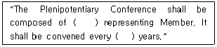
- delegates, four
- delegation, four
- delegates, six
- delegation, six
(정답률: 알수없음)
23. Which is the correct meaning defined below?
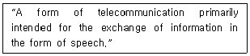
- Telegraphy
- Telephony
- Telecommunication
- Telegram
(정답률: 알수없음)
24. "ITU 회원국 정부가 투표권 없이 지역회의에 참가하도록 파견된 자“의 설명으로 가장 적절한 것은?
- Administration
- Delegate
- Expert
- Observer
(정답률: 알수없음)
25. 다음 문장이 의미하는 것으로 가장 적합한 것은?(문제 오류로 실제 시험에서는 2,3번이 정답처리 되었습니다. 여기서는 2번을 누르면 정답 처리 됩니다.)
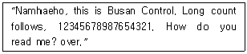
- Namhaeho에게 숫자를 송신하는 내용
- Namhaeho와 송·수신기를 조정시키기 위해 보내는 글
- Namhaeho에게 감도를 문의하기 위해 긴 숫자를 수신하도록 하는 글
- 긴 숫자를 송신하는 내용
(정답률: 알수없음)
26. Which area is that within the coverage of an INMARSAT geostationary satellite in which continuous alerting is available?
- Sea area A0
- Sea area A1
- Sea area A2
- Sea area A3
(정답률: 알수없음)
27. 다음 문장의 괄호 안에 들어갈 적합한 것은?
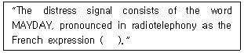
- m'aider
- maidai
- mene
- meida
(정답률: 알수없음)
28. 다음 문장의 괄호 안에 가장 적합한 것은?
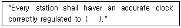
- UTC
- KST
- ITU
- KMT
(정답률: 알수없음)
29. "호출 부호“를 바르게 영역한 것은?
- station sign
- calling name
- call sign
- station name
(정답률: 알수없음)
30. 다음 질문에 대한 대답으로 가장 적합한 것은?
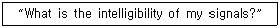
- The intelligibility of your signal is severely.
- The intelligibility of your signal is powerful.
- The intelligibility of your signal is good.
- The intelligibility of your signal is static.
(정답률: 알수없음)
31. 다음 중 약어 풀이가 틀린 것은?
- NOS = NUMBERS
- DEGS = DEGREES
- TCO = TRUE COUNTING
- KTS = KNOTS
(정답률: 알수없음)
32. All stations shall not make any transmission likely to interfere ( ) the message.
- of
- with
- in
- on
(정답률: 알수없음)
33. 음성통화표에 따라 1.23을 순서대로 읽은 것 중 틀린 것은?
- OO-NAH-WUN
- DOTS
- BEES-SOH-TOO
- TAY-RAH-TREE
(정답률: 알수없음)
34. 무선전보에서 발신국을 영문으로 표기한 것으로 옳은 것은?
- office of origin
- office of destination
- office of terminal
- office of relay
(정답률: 알수없음)
35. 다음 중 무선전화에서 “잠시 기다려라”의 뜻으로 맞는 것은?
- go ahead
- wait
- stand out
- break
(정답률: 알수없음)
36. 다음 문장에 대한 가장 적절한 번역은?
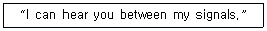
- 당국과 귀국 사이의 교신 신호를 수신할 수 있음.
- 당국은 당국의 신호 사이에서 귀국의 신호를 수신할 수 있음.
- 귀국은 당국의 신호 중 해당되는 교신신호를 수신할 수 있음.
- 귀국과 당국 사이의 교신 신호 내용을 모두 청수할 수 있음.
(정답률: 알수없음)
37. 아래 문장의 괄호 안에 가장 적합한 것은?
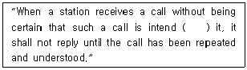
- for
- to
- in
- with
(정답률: 알수없음)
38. 다음 문장을 옳게 국역한 것은?
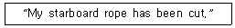
- 이곳의 좌현의 예인 로프는 절단되었다.
- 이곳의 우현의 예인 로프는 절단되었다.
- 이곳의 선수의 예인 로프는 절단되었다.
- 이곳의 선미의 예인 로프는 절단되었다.
(정답률: 알수없음)
39. 다음 중 괄호 안에 가장 적당한 것은?
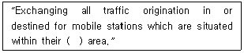
- shall
- audience
- service
- tone
(정답률: 알수없음)
40. 다음에 설명하는 것은 어떤 선박인가?
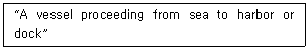
- 도선선
- 입항선
- 출항선
- 예인선
(정답률: 알수없음)
3과목: 임의 구분
41. 다음 중 무선국을 개설 허가 할 때 외국성의 배제와 관련 없는 것은?
- 외국의 법인
- 외국정부의 대표자
- 대한민국 국적을 가지지 아니한 자
- 파산선고를 받고 복권된 자
(정답률: 알수없음)
42. 다음 중 해상무선통신사의 종사범위를 초과하는 운용은?
- 세계해상조난 및 안전제도관련 무선전화설비의 통신운용
- 레이더의 외부의 전환장치로서 전파의 질에 영향을 주지 아니하는 기술운용
- 전파전자기능사 이상의 지휘하에 행하는 통신운용
- 선박에 시설하는 공중선전력 250와트 이하의 무선전화의 국내통신을 위한 운용
(정답률: 알수없음)
43. 전하에 의해 형성된 그 주위의 공간상태를 무엇이라고 하는가?
- 전기장
- 자기장
- 전자기장
- 전자파
(정답률: 알수없음)
44. 무선국의 개설허가를 받으려는 자는 허가신청서를 누구에게(어디에) 제출하여야 하는가?
- 전파연구소장
- 중앙전파관리소
- 방송통신위원회
- 지식경제부장관
(정답률: 알수없음)
45. 다음 중 비상통신의 내용으로 볼 수 없는 것은?
- 치안유지
- 인명구조
- 안전통신
- 전력과 기상확보
(정답률: 알수없음)
46. 다음 중 해상이동업무에서의 통신 우선순위가 가장 낮은 것은?
- 공중통신
- 긴급통신
- 안전통신
- 조난통신
(정답률: 알수없음)
47. 전파법상 무선설비의 고압전기에 해당되는 것은?
- 350[V]의 교류전압, 600[V]의 직류전압
- 600[V]의 교류전압, 750[V]의 직류전압
- 350[V]를 초과하는 교류전압, 600[V]를 초과하는 직류전압
- 600[V]를 초과하는 교류전압, 750[V]를 초과하는 직류전압
(정답률: 알수없음)
48. 다음 중 해상이동업무에 속하지 않는 것은?
- 선박국과 해안국 간의 무선통신업무
- 선박국 상호 간의 무선통신업무
- 선상통신국 상호 간의 무선통신업무
- 해안국 상호 간의 무선통신업무
(정답률: 알수없음)
49. 방송통신위원회가 대가에 의한 주파수를 할당하는 경우 주파수의 이용 기간은 최대 몇 년의 범위에 정하여 고시하는가?
- 5년
- 10년
- 15년
- 20년
(정답률: 알수없음)
50. 아래의 문장 중에서 ( ) 안에 들어갈 가장 적합한 용어는?
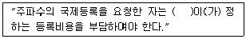
- 국제연합
- 국제전기통신연합
- 국제전기통신협약
- 국제주파수등록위원회
(정답률: 알수없음)
51. 다음 중 전파법의 목적에 관한 사항으로 볼 수 없는 것은?
- 전파의 효율적인 이용
- 전파에 관한 기술개발의 촉진
- 전파 관련 분야의 진흥
- 개인의 복리 증진
(정답률: 알수없음)
52. 전파발사 등급의 표시방법 중 기본특성의 둘째 기호(주반송파를 변조시키는 신호의 특성)에서 “아날로그 정보를 포함하고 있는 단일채널”을 나타내는 것은?
- 1
- 2
- 3
- 4
(정답률: 알수없음)
53. 다음 중 “SOLAS" 의 원어로 적합한 것은?
- the Safety of Land and Sea
- the Safety of Life at Sea
- the Source of Large Air Situation
- the Source of Land, Air and Sea
(정답률: 알수없음)
54. 총톤수 300톤 이상 500톤 미만의 화물선에는 최소한 몇 대의 양방향 VHF 무선전화장치를 비치해야 하는가?
- 1대
- 2대
- 3대
- 4대
(정답률: 알수없음)
55. 국제 NAVTEX 통신 서비스(International NAVTEX service)에 이용되는 언어는?
- English
- French
- German
- Russian
(정답률: 알수없음)
56. 항행경보, 기상경보, 기상예보 또는 긴급한 정보를 선박 앞으로 방송하는 것을 무엇이라 하는가?
- 해사기상정보
- 해사안전정보
- 해사긴급정보
- 해사조난정보
(정답률: 알수없음)
57. 통신보안 위규사항 중 국가 행정비밀의 누설에 관한 사항으로 볼 수 없는 것은?
- 대공관계 특별호구조사, 신원조사 등
- 비밀로 분류된 대공관계 신고, 보고제도
- 재외 공관에 발하는 훈령
- 기타 국가 시책에 영향을 초래하는 사항
(정답률: 알수없음)
58. 평문의 문자나 숫자 등에 암호기술을 가하여 그 내용 전체를 체계적으로 변경시키는 것을 무엇이라 하는가?
- 음어
- 약호
- 약어
- 암호
(정답률: 알수없음)
59. 비밀이나 중요내용이 통신에 의해 누설되는 주요원인이 아닌 것은?
- 무선침묵의 위반
- 보고체계의 간소화
- 과도한 통신의 소통
- 취약성이 있는 통신망을 사용
(정답률: 알수없음)
60. 다음 중 보안자재의 긴급파기 순서는?
- 과거용-미래용-현재용
- 미래용-과거용-현재용
- 현재용-미래용-과거용
- 미래용-현재용-과거용
(정답률: 알수없음)